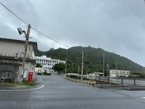
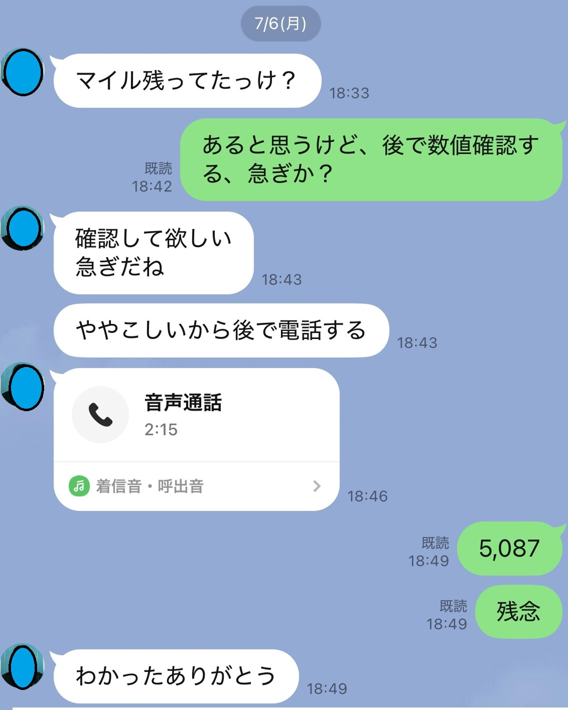
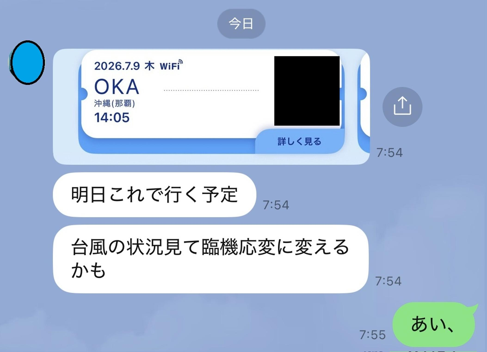

うるがいの話 ある日
最新: 台風９号について【うるがいの話 ある日】とは 一日だけのプログです
『うるがいの話』の最新一日だけのプログで、通信料が少なく経済的だ。カニの画像をクリックすると全ての日付が載る『うるがいの話』サイトを表示します
|
|
【うるがいの話】 うるがい(ｳﾙｶﾞｲ urugai)とは、『もずくがに』の名前でとても大きくなります。 |
|---|---|
|
|
【カミマヤーの話】 猫のことを方言でマヤーといいます。カミマヤー（kamimayaa）とは、神の猫のことです。 |
|
【たながぁの音楽】 たながぁ（ﾀﾅｶﾞｰ tanagaa）とは手長えびのことで、何種類かあり大きいのは車 エビぐらいになります。 |

|
【ぶながぁの話】 ぶながぁ(ﾌﾞﾅｶﾞｰ bunagaa)とは、赤い髪の毛、赤い身体、そして身長は１ｍ２０ｃｍ ぐらい、川の蟹を食べているの目撃された。場所は沖縄県国頭郡大宜味村のと ある村僕の隣近所に住んでいる爺さんから、聞いた話です。 |
|
|
【ギーマの話】 ギーマ(giima)とは、山原の里山に咲くスズランに似た、 花を付けます。実は食べられます、 気が付くと口の周りが紫になっています。 |
2026年07月08日 (水）台風９号について
15:15

昨日病院から、おばさんを送って家に戻ると夕方７時前、外へ出
ませんでした。気がつくと昨日、空を撮ってません。で６月２８
日の山原の山を載せました。

朝早くからから、子供からラインがありました。

昨日の夜中、航空会社の運航状況を確認してるとなんとコドモが
飛行機に乗れない状況になっていた。台風は、石垣に向かってい
るのに。ま、明日になれば分かる。風が、少し出てきています。
台風９号に伴い、下記に記載されたＡＮＡ便の航空券につきまし
ては、実際の運航状況に関わらず、手数料をいただかずにご搭乗
便の変更（振替）および払い戻しを承ります。
■対象空港
沖縄
・沖縄（那覇）空港 ７月１０日 始発便から
７月１１日 １１：５９までのすべての発着便